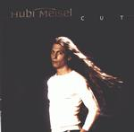

Home Artist links

Hubi Meisel - Cut
| Artist: | Hubi Meisel |
| Title: | Cut |
| Label: | self produced MIEZ 0201-2 |
| Length(s): | 31 minutes |
| Year(s) of release: | 2002 |
| Month of review: | [05/2002] |
Line up
Hubi Meisel - vocals
Marcel Coenen - guitars
Franz Pfeffer - keyboards
Frank Brunier - drums
n-dee - bass
Tracks
| 1) | Just Died In Your Arms Tonight | 4.28
|
| 2) | Send Me An Angel | 4.09
|
| 3) | Drive | 3.49
|
| 4) | Relax | 3.41
|
| 5) | The Sun Always Shines On TV | 4.36
|
| 6) | Broken Wings | 4.35
|
| 7) | Red Sector A | 5.22
|
Summary
Hubi Meisel thought it wise to record an album full of covers of songs
from the eighties and give them all a progmetal arrangement. His choice
is impeccable: the only track I do not really like is Send Me An Angel which
fall in the "not bad" category. For the rest, if this choice reflects
his taste, then I am not complaining. But choosing great songs does not
necessarily allow for good covers.
The music
In fact, you are running an already lost race. Starting with Cutting Crew's
Just Died In Your Arms Tonight, Meisel's somewhat accented voice is a bit
flat here. For the remainder a hear a lot of runs played on guitar.
A somewhat sloppy sounding cover. Send Me An Angel is originally a very melodic
track, but here a bit less so. The vocals seem unnatural.
The impressive tragic aspects of Drive are hopelessly lost in the version
played here. The opening guitar solo is too icky. The aoucstic guitar is fine
but those hey-ie-yeah's...
On Relax I think the results are way better resulting in something which
sounds completely different and quite complex. The Sun Always Shines On TV
has too many metal manierisms. Again the guitar playing is fine, but the
vocals fall short.
On Broken Wings the vocals sound as if broken themselves. Not a bad effect.
Now Red Sector A was always my favourite Rush song, one of those songs
to bring tears to my eyes. This simply does not happen here. I guess
Meisel cannot yet convey the doubt, the despair, the hope and the sadness
of Geddy Lee.
Conclusion
Although Meisel might have chosen these songs simply because he loves them,
this does not make it a good thing to start recording them. In fact, he would
do better to look for songs where improvement or even an alternative version
is possible at all. The songs covered have too much their own identity,
an identity that according to some people will be sacrilige to touch.
As regards the qualities of Meisel's singing, I am also not impressed
as yet. His voice does not strike me as distinctive or particularly appealing.
© Jurriaan Hage